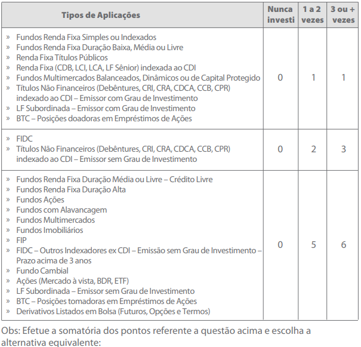
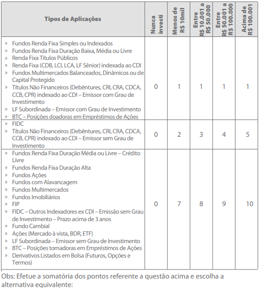

Tipo de Investidor
Questão 1
Por quanto tempo você pretende deixar seu dinheiro investido?
Menos de 6 meses
Entre 6 meses e 1 ano
Entre 1 ano e 3 anos
Acima de 3 anos
Enviar Resposta
Questão 2
Qual o objetivo desse investimento?
Preservação do capital para não perder valor ao longo do tempo, assumindo baixos riscos de perdas
Aumento gradual do capital ao longo do tempo, assumindo riscos moderados
Aumento do capital acima da taxa de retorno média do mercado, mesmo que isso implique assumir riscos de perdas elevadas
Obter no curto prazo retornos elevados e significativamente acima da taxa de retorno média do mercado, assumindo riscos elevados
Enviar Resposta
Questão 3
Qual das alternativas melhor classifica sua formação e experiência com o mercado financeiro?
Não possuo formação acadêmica ou conhecimento do mercado financeiro
Possuo formação acadêmica na área financeira, mas não tenho experiência com o mercado financeiro
Possuo formação acadêmica em outra área, mas possuo conhecimento do mercado financeiro
Possuo formação acadêmica na área financeira ou pleno conhecimento do mercado financeiro
Enviar Resposta
Questão 4
Considerando seus rendimentos regulares, qual a porcentagem você pretende reservar para aplicações financeiras?
No máximo 25%
Entre 25,01 e 50%
Acima de 50%
Enviar Resposta
Questão 5
Caso as suas aplicações sofressem uma queda superior a 30%, o que você faria?
Resgataria toda a aplicação e aplicaria na poupança
Manteria aplicação aguardando uma melhora do mercado
Aumentaria a aplicação para aproveitar as oportunidades do mercado
Enviar Resposta
Questão 6
Como está distribuído o seu patrimônio?
Meu patrimônio não está aplicado ou está todo aplicado em renda fixa e/ou imóveis
Menos de 25% em renda variável e o restante em renda fixa e/ou imóveis
Entre 25,01 e 50% aplicado em renda variável e o restante em renda fixa e/ou imóveis
Acima de 50% em renda variável
Enviar Resposta
Questão 7
Em relação as aplicações e rendimentos, em qual dessas situações você se enquadra?
Conto com o rendimento dessas aplicações para complementar minha renda mensal
Eventualmente posso resgatar parte das aplicações para fazer frente aos meus gastos. Contudo, não tenho intenção de resgatar no curto prazo e pretendo fazer aplicações regulares
Não tenho intenção de resgatar no curto prazo, mas não pretendo realizar novas aplicações
Não tenho intenção de resgatar no curto prazo e ainda pretendo fazer aplicações regulares
Enviar Resposta
Questão 8
Indique em quais aplicações listadas abaixo você já investiu e qual a frequência nos últimos dois anos. Pode assinalar mais do que uma alternativa.

Entre 0 e 1 ponto
Entre 2 e 4 pontos
Acima de 5 pontos
Enviar Resposta
Questão 9
Tomando por base as respostas da questão anterior, informar o volume aproximado que foi destinado a cada operação no período.

1 ponto
Entre 2 e 6 pontos
Acima de 7 pontos
Enviar Resposta
Questão 10
Qual sua faixa de renda mensal média?
Até R$ 1.000
De R$ 1.001 até R$ 5.000
De R$ 5.001 até R$ 10.000
Acima de R$ 10.000
Enviar Resposta
Questão 11
Qual o valor aproximado do seu patrimônio?
Até R$ 10.000
De R$ 10.001 até R$ 100.000
De R$ 100.001 até R$ 500.000
De R$ 500.001 até R$ 1.000.000
Acima de R$ 1.000.001
Enviar Resposta
Obrigado por responder a pesquisa!
Seu score é:
Voltar